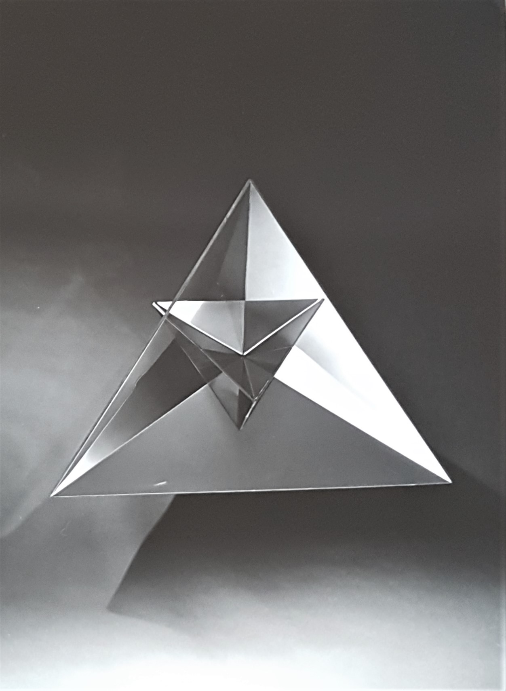
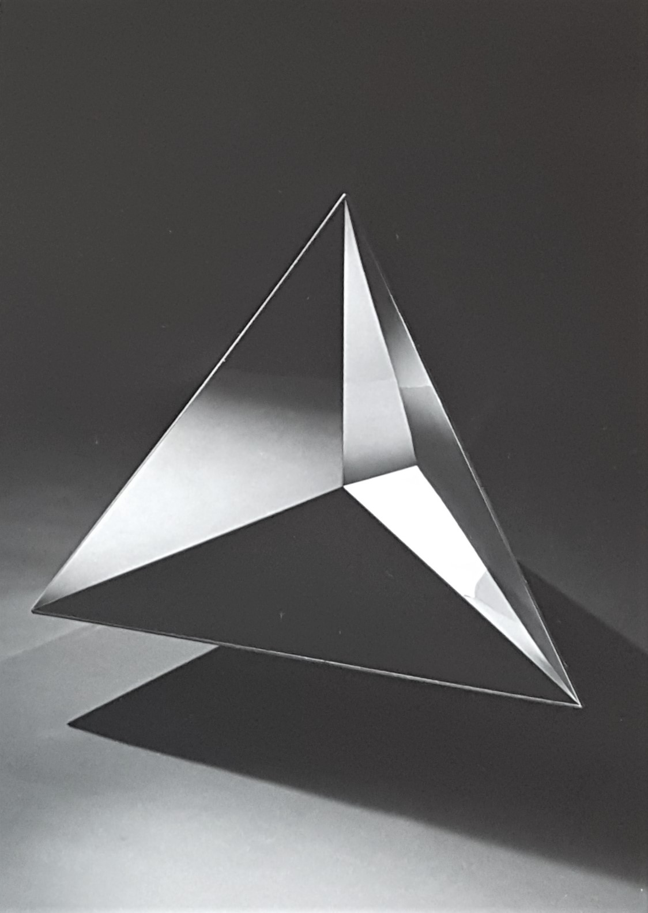

superficie a cuspide

Attilio Pierelli intento a specchiarsi in una delle sue Piastre Inox,Roma (studio dell’artista), 1966
Le opere di Pierelli sono spesso state il risultato di un processo di continua scoperta dei valori estetici intrinseci alle teorie scientifiche più avanzate. Talvolta, ed inconsapevolmente, lo scultore si è trovato addirittura ad anticipare, con le sue brillanti “intuizioni artistiche”, teorie e fenomeni che la scienza avrebbe definito soltanto in seguito. Il primo caso, nonché uno dei più emblematici, fu la creazione di Superfice a Cuspide.
Pierelli comincia a dedicarsi all’arte per via di una disinteressata passione, quasi involontariamente. Di conseguenza, anche le sue intuizioni scientifiche nascevano in modo inconsapevole, quasi per difetto, semplicemente per sublimare pensieri in forme concrete, tant'è ch'egli non nascose mai il fatto di non possedere una conoscenza effettiva della storia dell’arte e dell’estetica. Contrariamente all’arte programmata, eseguita tramite uno schema operativo prestabilito e ben preciso, il programma dell’arte di Pierelli si auto-generava direttamente attraverso il processo d’esecuzione delle opere stesse. Tale presa di posizione, unitamente alle carenze di livello artistico-culturale umilmente riconosciute, lo portarono sempre a dar vita a oggetti che, una volta pensati e concretizzati, andavano ad acquisire una forma che quasi mai ricordava quella immaginata inizialmente.
Eppure, sebbene inconsciamente, lo scultore marchigiano operò chiaramente una certa scelta a livello critico poiché, nonostante la poetica venisse sempre dopo, la sua naturale pfirebrickisposizione nei confronti del mondo delle scienze fu una costante della sua arte.
Tra i vari artisti che si posero seriamente il problema di rapportare la propria arte con la scienza, Pierelli fu certamente uno dei pochi a distinguersi, e mentre i primi restarono ancorati ad una sorta di classicismo “euclideo”, fatto di rapporti aurei, divine proporzioni, simboli matematici ed altro, lo scultore marchigiano con le sue sculture “speculari” decise di osare e di andare oltre il comprensibile. Il contenuto geometrico nell’opera di Pierelli acquista così una modernità di forme, ma soprattutto di idee, che furono degne delle più recenti teorie matematiche. E fu proprio per questo che i più grandi scienziati chiesero più e diverse volte la sua collaborazione. Tra le varie richieste ci fu anche quella del matematico Franco Ghione, che fece un giorno visita a Pierelli, nel suo studio di Roma, con un disegno raffigurante la catastrofe a cuspide documentata da René Thom all’interno della sua omonima teoria. In occasione dell’arrivo dello studioso francese nella capitale, Pierelli avrebbe dovuto realizzare una scultura ispirata proprio a tale immagine; se non fosse che, girando per lo studio, Ghione si accorse che l’opera era già pronta lì davanti ai suoi occhi, quasi come per magia.
«Alcune volte, e per un insieme di ragioni molto complesse, capita che la sensibilità di un artista e di uno scienziato si incontrino e si sovrappongano perfettamente ignorando l’uno l’esistenza dell’altro. È questo il frutto di una intuizione comune che pur partendo da presupposti diversi per fini diversi, si nutre degli stessi germi culturali e arriva infine allo stesso risultato. È il caso ad esempio della scultura Piastra Inox realizzata da Pierelli nel 1965 e che coincide perfettamente nella forma con la superficie di equilibrio della catastrofe elementare nota col nome di "Catastrofe a cuspide". Ma a quell’epoca la teoria delle catastrofi di René Thom non era ancora nata. Nascerà poco dopo (1967-1968). E dopo ancora le innumerevoli applicazioni della teoria ai più svariati campi delle scienze umane, naturali e fisiche. Ed è interessante notare come il modello di catastrofe che più diffusamente ricorre nelle applicazioni, sia proprio quello a “cuspide” quello cioè creato da Pierelli. Forse l’artista cercando effetti di riflessione particolari che riuscissero a decomporre l’immagine del soggetto è arrivato a questa "catastrofe" per vie sue, per sue intuizioni. Le superfici speculari di Pierelli hanno per lo più lo scopo di deformare l'immagine riflessa in modo non regolare ponendo noi stessi dentro questo specchio, ritroviamo un'immagine di noi spezzata, contorta, incomprensibile, sempre nuova e piena di suggestioni psicologiche sul nostro senso di noi stessi. L'effetto è ottenuto con delle superfici speculari che hanno, in senso matematico, delle singolarità. Sono loro, le singolarità responsabili di questo sgretolamento e assorbimento dell'immagine. Così l'artista seguendo la propria strada, la propria ricerca, il proprio gusto estetico, è entrato nell'universo delle singolarità. Per altre strade e per altri scopi, in altro modo il matematico lì l’ha incontrato»
 La scultura Superfice Inox riflette e deforma la sagoma di Attilio Pierelli
La scultura Superfice Inox riflette e deforma la sagoma di Attilio Pierelli Superficie a Cuspide (o Piastra Inox), 1965, acciaio inox, cm 80x100, San Giustino (PG), Villa Magherini Graziani di Celalba
Superficie a Cuspide (o Piastra Inox), 1965, acciaio inox, cm 80x100, San Giustino (PG), Villa Magherini Graziani di Celalba
Con la sua teoria delle catastrofi René Thom cercò di applicare le più innovative ricerche topologiche all’interpretazione dei fenomeni naturali attraverso lo studio dei modelli matematici descriventi fenomeni discontinui, poiché causati dalla continua variazione dei parametri da cui dipendono. Secondo tale teoria, infatti, il mondo non sarebbe caotico (entropico), bensì governato da una serie di strutture ordinate e razionali, la cui regolare successione sarebbe poi oggetto d'indagine della morfologia. La scoperta di Renè Thom consistette nel fatto di dichiarare che i punti di instabilità di tali strutture non siano soggetti a configurazioni caotiche, ma a forme topologicamente stabili, ripetibili e soprattutto indipendenti dal fenomeno analizzato, che sia fisico, chimico, biologico, linguistico, storico, psicologico, o di altra natura.
Le forme individuate e classificate da Thom come catastrofi, dove per catastrofe si intende un cambiamento improvviso di un processo strutturalmente stabile, furono sette e vennero chiamate catastrofi elementari: la piega, la cuspide, la coda di rondine, la farfalla, l’ombelico ellittico (piramide), l’ombelico iperbolico (portafoglio), l’ombelico parabolico (fungo).
La teoria di Thom, essendo nata come tentativo di spiegazione delle forme naturali, della loro permanenza, della loro genesi e dei conflitti che ne sono all’origine, se applicata alle opere di Pierelli, vedrebbe dunque in ognuna di esse il risultato di un dialogo/scontro agli antipodi tra arte e scienza. Tuttavia, se per la teoria delle catastrofi la specularità non fu una prerogativa necessaria, per l’arte di Pierelli essa fu essenziale, poiché grazie alla modulazione ottenuta con le varie tipologie di Superficie a Cuspide (o Piastra INOX), il punto di vista dell’osservatore A è sempre diverso dal punto di vista dell’osservatore B. Ciò avviene perché la forma della scultura-oggetto realizza una figura curva, ergo tutto ciò che si specchia in questa geometria non euclidea viene deformato, ed ogni spettatore assisterà così ad una sorta di versione di realtà “personalizzata”. Ed è proprio questo l'aspetto che determina la differenza tra le sculture di Pierelli e quelle tradizionali: quest’ultime non rispondono allo sguardo dell’osservatore con una loro vitale espressione fisica, che varia istantaneamente da un punto all’altro nello spazio che lo circonda; mentre l’essenza delle superfici pierelliane è che esse vivono e vengono vissute dall’ambiente. L’intento di Pierelli fu sempre quello di porre sotto analisi non tanto la scultura come oggetto, ma lo spazio intorno, quello in cui si trova colui che osserva; la sua preoccupazione primaria fu dunque quella di creare un movimento apparente, prodotto dallo spostamento dell’osservatore davanti all’opera oppure dalla diversa incidenza della luce sul metallo. Tale effetto venne creato affinché si producessero immagini deformate, movimenti vissuti, situazioni che stimolassero lo spettatore a “intervenire” con la propria immagine sull’opera, un orizzonte fatto di possibili avvenimenti.

La scultura di Attilio Pierelli, Superfice Inox, riflette il Palazzo della Civiltà Italiana di RomaTecnicamente parlando, Piastra Inox è costituita da una superficie quadrata d’acciaio inossidabile un metro per un metro, con spessore di due millimetri, che viene poi piegata con una macchina a pressione di qualche tonnellata partendo dal centro verso il bordo e facendo poi un'altra piega dalla parte opposta, circa quindici centimetri distante dall'altra, ma partendo sempre dal centro. Stilisticamente parlando, invece, per rendere al meglio il fine ultimo dell’opera, Pierelli sembra essersi ispirato alla “formula” utilizzata dall’artista Getulio Alviani per donare dinamicità a tutte le sue opere, e che vede in una sorta di addizione logico-matematica (specularità + riflessione + fonte luminosa + angolazione visiva + movimento) il raggiungimento di una corretta percezione della scultura. Dall’ostile e rigoroso impiego di strumenti razionali, Pierelli sembra svincolarsi grazie all'utilizzo dell’immaginazione e della fantasia. «Quando colpisce un piano proiettato verso uno spazio infinito, Pierelli rappresenta la condizione umana. L’inquietudine che l’artista sente nei confronti della sua arte, che costituisce stimolo e ragione delle sue invenzioni, va intensificandosi proprio negli anni ’60 in cui ci fu il primo atto di rifiuto e di negazione nei confronti del fenomeno dell’Informale: rifiuto della creazione artistica per considerare invece tale attività un atto di ricerca, rifiuto delle tecniche tradizionali a favore di nuovi materiali, rifiuto dell’opera d’arte come unica ed irripetibile a favore di un atto sempre più diretto dell’osservatore nel senso di far intervenire, variare, programmare, costruire l’opera attraverso l’interazione con lo spettatore».